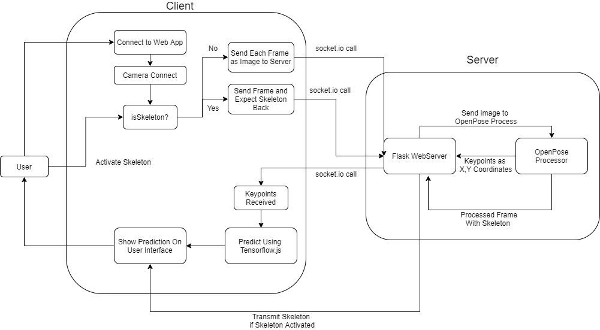

We started out doing... Blah blah
We are using LSTM, Long Short Term Memory, blah blah...
We have a web application blah blah (App architecture to be updated)

We would like to thank Professor Jonathan, who has
supervised us in our project with great guidance and help.
We would also like to extend our gratitude to Lucas Barbuto,
in helping us set up our MSE-IT Virtual Machine in order
to provide us with computational resource and power to
train and deploy our AI model.